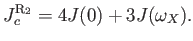
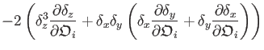
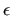
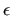
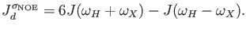
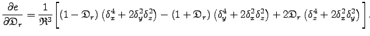
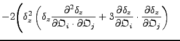
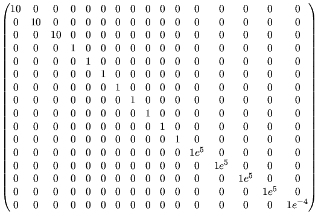

Next: The reduced B14 2-site Up: The analytic CPMG models Previous: The TSMFK01 2-site CPMG Contents Index
This is the model for 2-site exchange exact analytical derivation on all time scales (with the constraint that pA > pB), named after Baldwin (2014). It is selected by setting the model to `B14 full'. The equation is
 |
where Appendix 1 in Baldwin (2014) lists the recipe for the exact calculation of R2eff. Note that the following definitions are different to those in the original publication, but match both the reference implementation and the relax implementation. The definitions are functionally equivalent. First establish the complex free precession eigenfrequency with
 |
The ground state ensemble evolution frequency f00 expressed in separated real and imaginary components in terms of definitions  ,
,  , and h4 is
, and h4 is
| f00 = |
(11.38) |
Define substitutions for `stay' and `swap' factors as
|  |
The weighting factors for frequencies E0-2 emerging from a single CPMG block, F0-2, are
|  |
Here
 = 1/4.
The final result, with identities to assist efficient matrix exponentiation optimised for numerical calculation, is
= 1/4.
The final result, with identities to assist efficient matrix exponentiation optimised for numerical calculation, is
|  |
The advantage of these equations is that you will always obtain the correct answer provided you have 2-site exchange, in-phase magnetisation and on-resonance pulses.
The term pD is based on product of the off diagonal elements in the CPMG propagator, see supplementary Section 3 (Baldwin, 2014).
It is interesting to consider the region of validity of the Carver and Richards result. The two results are equal when the correction is zero, which is true when
|   |
(11.42) |
This occurs when
kABpD tends to zero, and so
 =  .
Setting
kABpD to zero amounts to neglecting magnetisation that starts on the ground state ensemble and end on the excited state ensemble and vice versa.
This will be a good approximation when
pA
.
Setting
kABpD to zero amounts to neglecting magnetisation that starts on the ground state ensemble and end on the excited state ensemble and vice versa.
This will be a good approximation when
pA  pB.
In practise, significant deviations from the Carver and Richards equation can be incurred if
pB > 1%.
Incorporation of the correction term results in an improved description of the CPMG experiment over Carver and Richards (1972).
pB.
In practise, significant deviations from the Carver and Richards equation can be incurred if
pB > 1%.
Incorporation of the correction term results in an improved description of the CPMG experiment over Carver and Richards (1972).
The reference for this equation is:
More information about the B14 full model is available from: